01Smooth rising transition


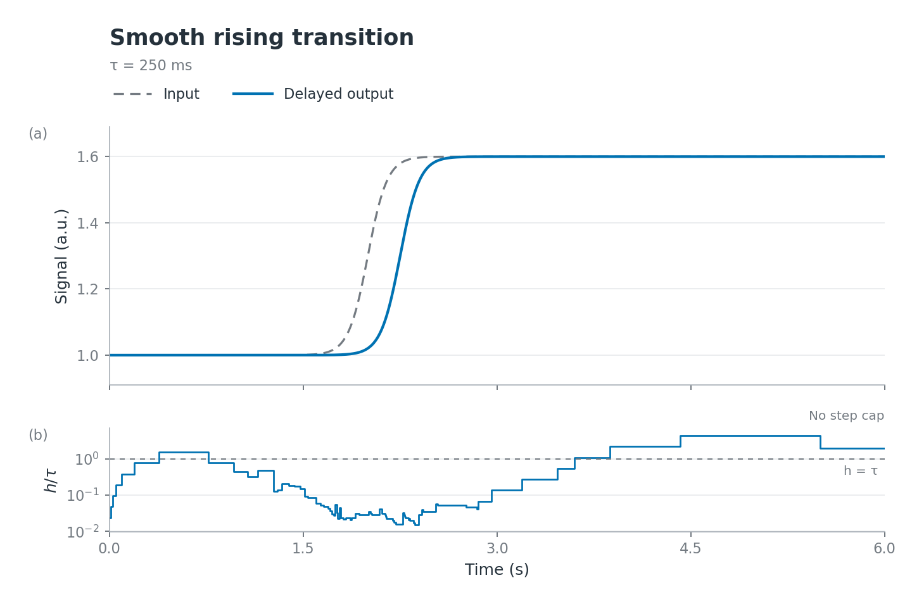
02Gaussian pulse widths


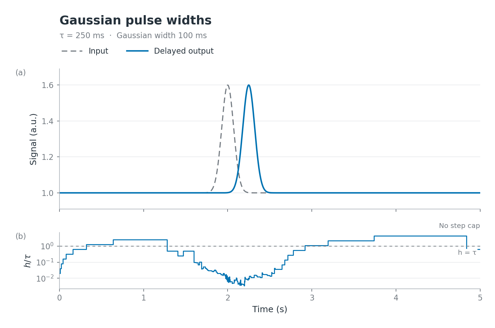
03Broad and narrow features


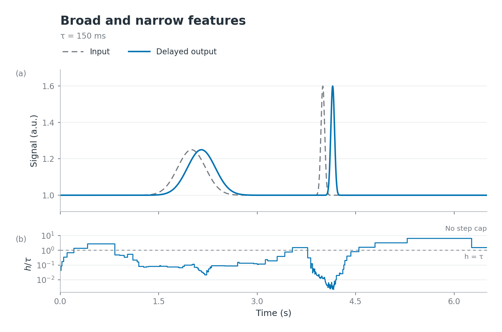
04Oscillatory packet


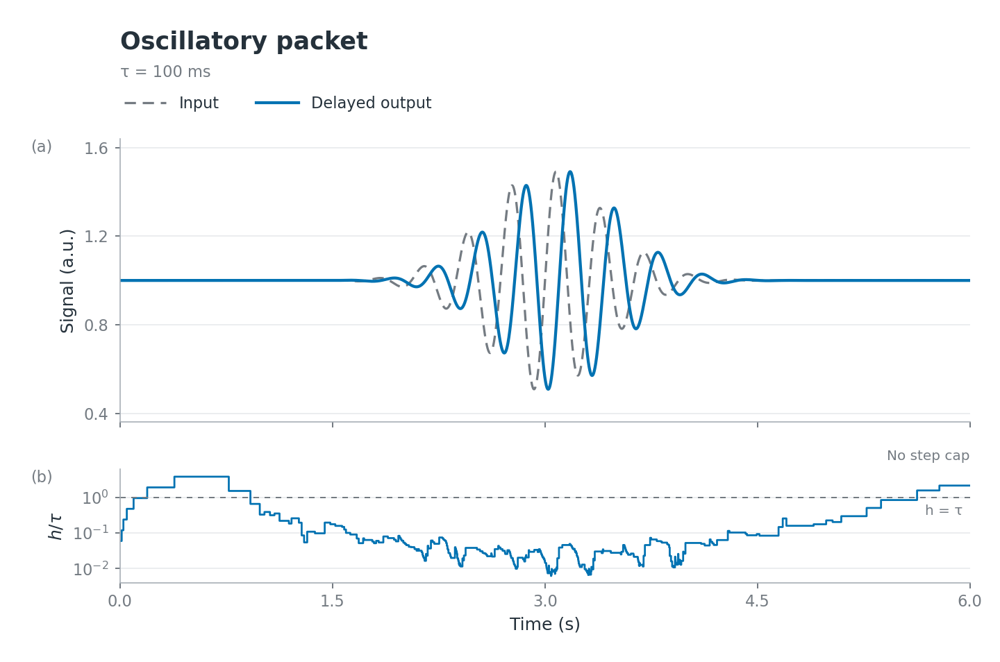
05Adaptive pulse propagation


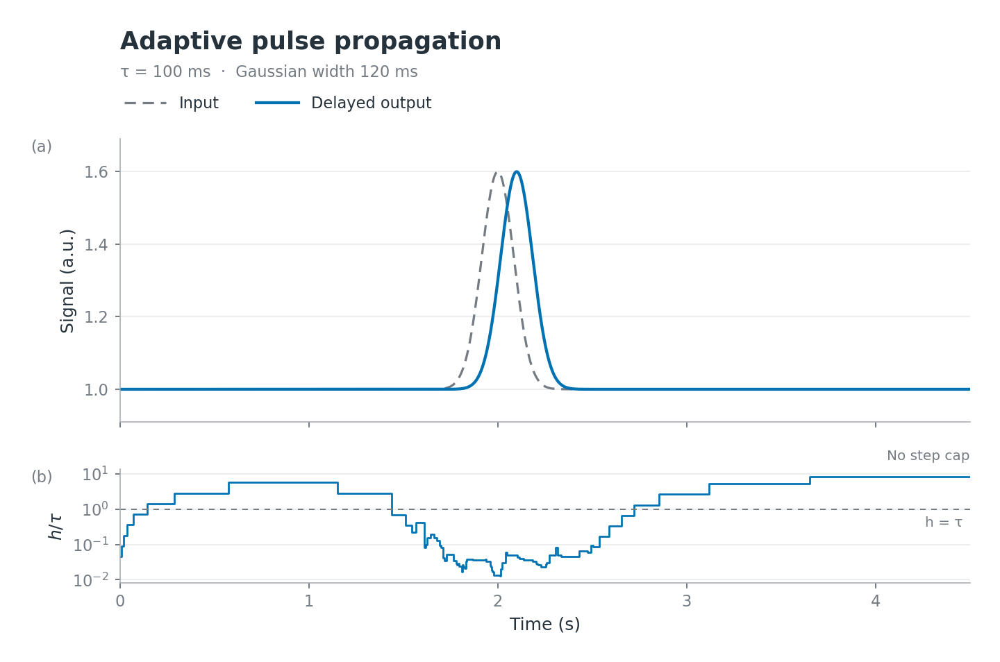
06Long propagation delay


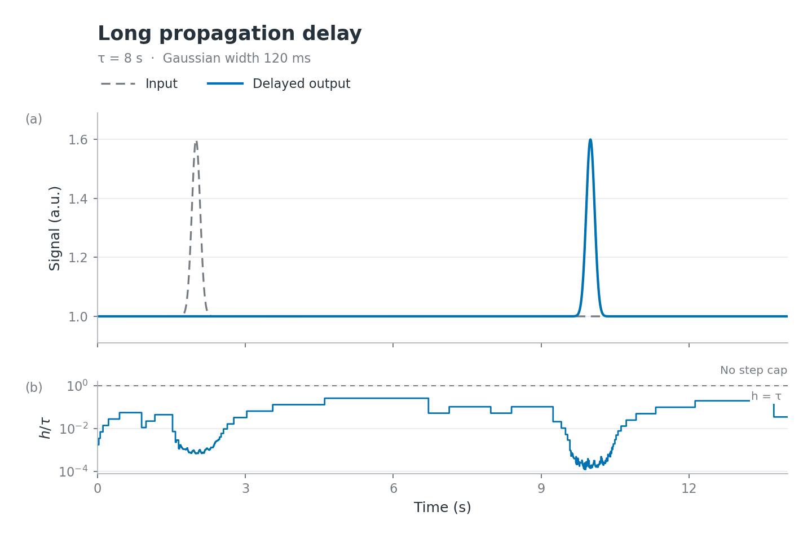
07History compression
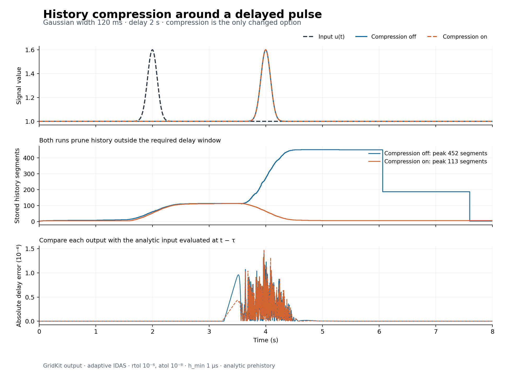
08Sharp smooth edges


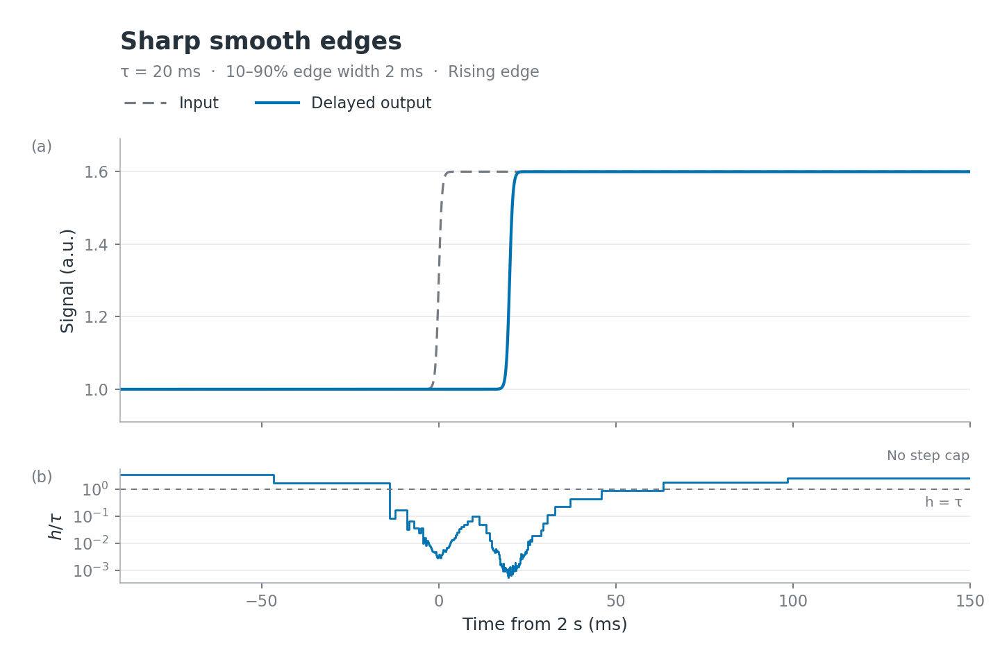
09Bipolar sine waves


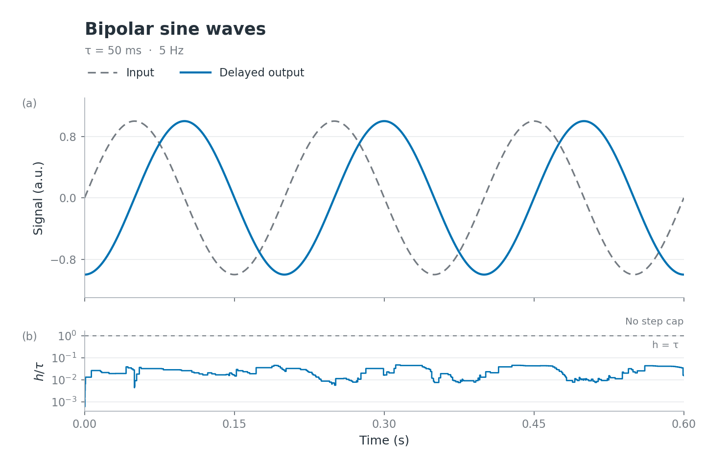
10Increasing-frequency waveform


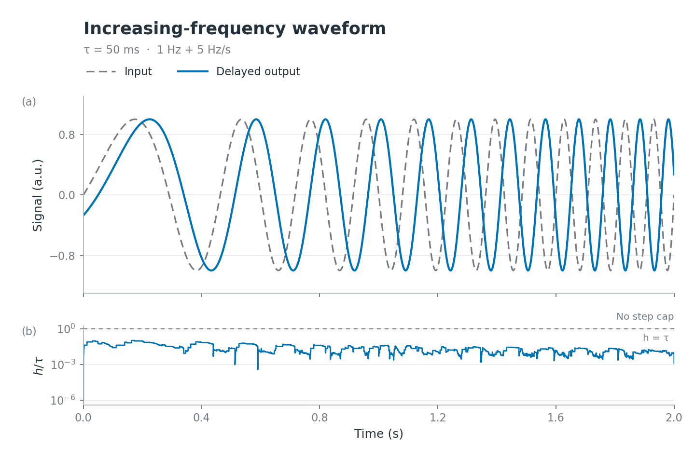
11Continuous signals with corners


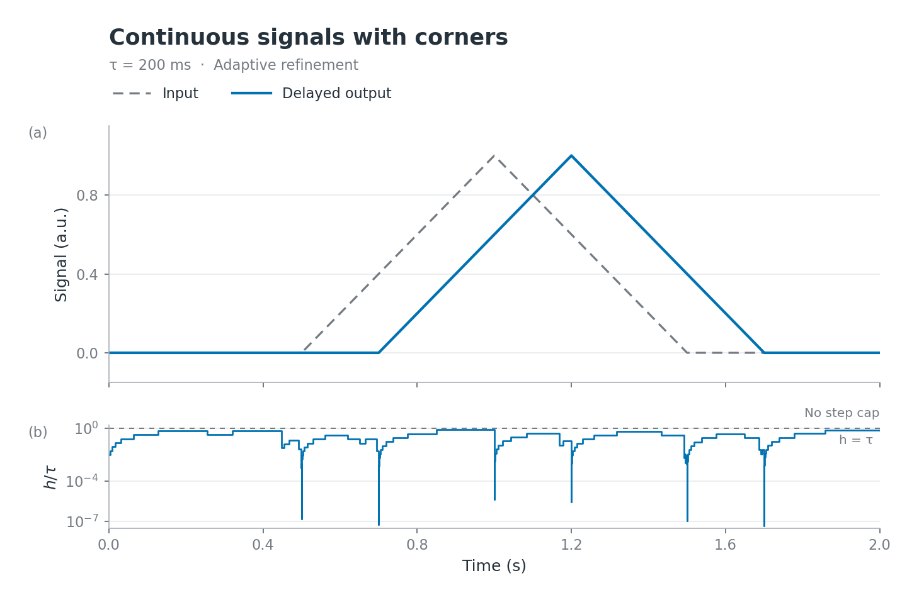
12Narrow pulses at different offsets


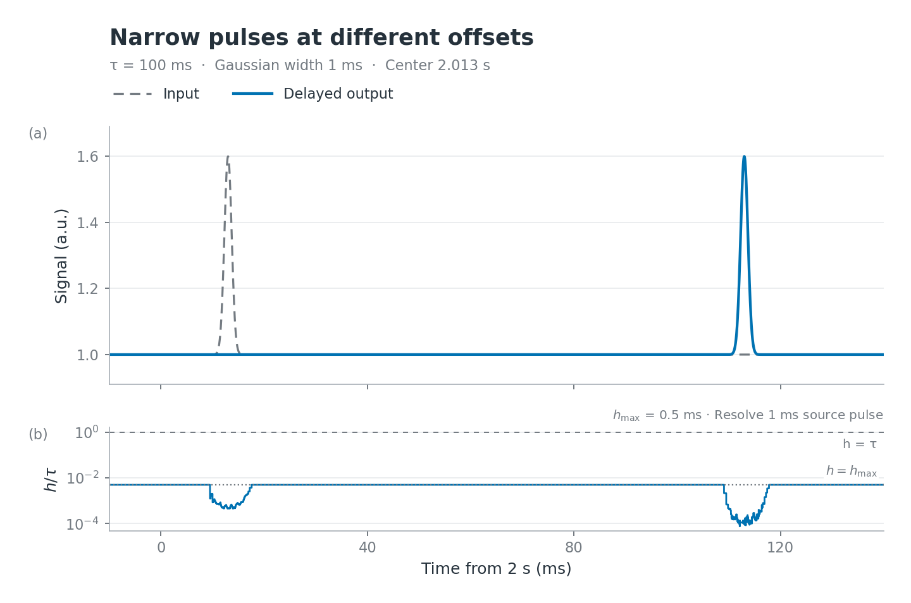
13Resolving a narrow source pulse
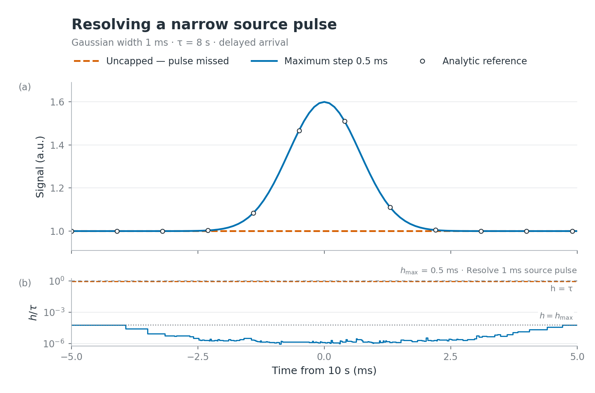
14History reconstruction
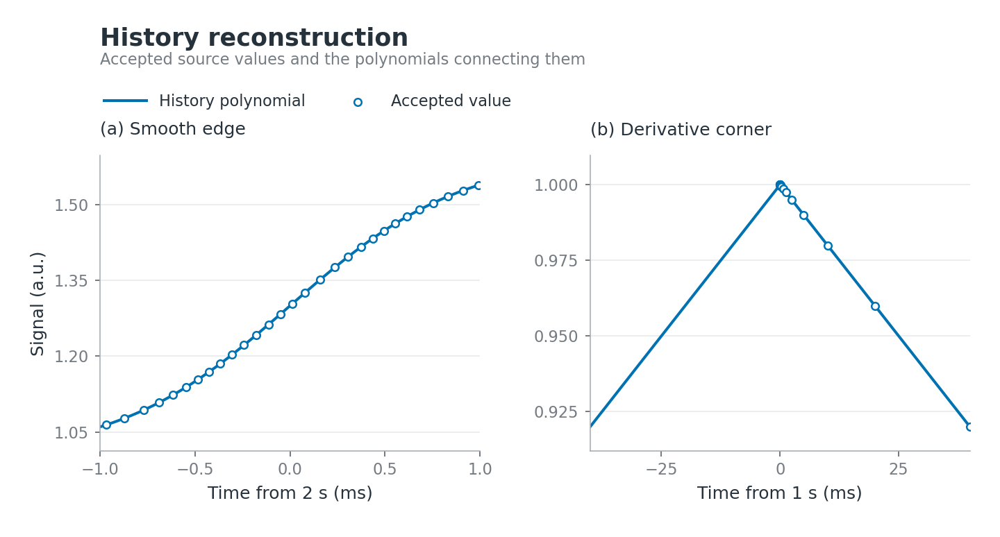